2016版：密码学科普，兼谈GnuPG和VeraCrypt
文章目录
零.荐书
近期看了本结城浩的《图解密码技术》，感觉真心不错，翻到了自己最开始写的幼稚无比的文章，简直无语啦。有必要将此文章推倒重来……也怪那个时候我还不会写文章！所以，嘿嘿，重新写咯！
一.加密术的必要性
有些同学以为，自己既不是影视明星，又不是恐怖分子，不需要采用文件加密之类的工具，那就大错特错啦。俺大致介绍一下，文件加密的用武之地。
强烈推荐阅读编程随想博文，原文地址为：http://program-think.blogspot.com/2011/05/file-encryption-overview.html
防范失窃
失窃，这年头移动设备越来越多流行，设备丢了，被顺走的可能也会增加。想想啊，东西一丢，上面的各种隐私资料、甚至包括浏览器自动保存的账号密码，不就都泄露了吗？
保护个人隐私
不要说自己是个光明正大的人，有什么隐私可以保护？如果是这样，为何要用信封呢？怎么不脱光光出去呢？
另外，有些人家里是公用电脑的，那你上网下的小黄片、或者是艳照什么的，被看到了多不好，所以也要加密的。
加密个人数据
一些东西备份到移动硬盘上，某天要借人，但是你又不想让他看到你的东西——或者上传到各种"云盘"，党国嘛，是很关心俺们屁民的隐私的。具体原因你懂的。
对抗极权统治
这一点，恐怕是现代密码学发展到今天最伟大的用途之一：终于有了一种工具与方式，可以让普通到不能普通的人和国家机器斗争，尤其是极权的国家机器。
如果你是某些习惯抹黑党国的人（党国本来就黑，还抹什么啊），或者是民权人士、持不同政见者，那被查水表之后，电脑被收走，说不定要牵扯出多少人。
二.密码泛谈
对称密码
对称密码全名叫做"对称密钥加密"，是密码学中的一类加密算法。这类算法在加密和解密时使用相同的密钥，或是使用两个可以简单地相互推算的密钥。非常著名的标准有DES（已经不再推荐使用、三重DES、AES）。对称密码有ECB、CBC、CFB、OFB、CTR五种分组模式。有兴趣的小伙伴可以去自行维基。
非对称密码
在对称密码中，存在一个非常bug的问题：如何配送密钥。直接发送密钥吧，很容易被窃取到；面交似乎还挺费事的。再给密钥进行加密，也不过是转移了安全配送的对象而已。
为了解决这种配送密钥的问题，人们总结出了以下几种方法：
事先预共享密钥、密钥分配中心、Diffie-Hellman密钥交换、公钥密码。
我们要说的就是这个公钥密码，也被称作非对称加密。在这种密码学方法中，需要一对密钥，一个是私人密钥，另一个则是公开密钥。我们称公开的密钥为公钥；不公开的密钥为私钥。这两个密钥是数学相关的，用某用户公钥加密后所得的信息，只能用该用户的私钥才能解密。如果知道了其中一个，并不能计算出另外一个。因此如果公开了一对密钥中的一个，并不会危害到另外一个的秘密性质。
通常，我们都使用公钥进行加密、而私钥进行解密；但是也有一个例外，在签名上，我们就使用私钥加密、公钥解密。为何如此？我写了一个工具，用私钥签了名，只有我才可以签名，而持有公钥的大众都可以对其进行验证
对称加密中，私钥就像是一把钥匙。可以用钥匙把东西锁到盒子里（加密），也可以用钥匙打开盒子（解密）。对称加密的密钥可以加密、解密。这也就意味着如果私钥泄露，隐私不在。那么问题就来了，你怎么保证私钥可以被安全传输而不被第三方获取？
非对称加密中，密钥体系分成公约和私钥。顾名思义，公开的密钥和私有的密钥。公钥是公开出去的，任何人都可以用这个公钥来加密文件，但是加密之后只能用私钥才能解开。这也就意味着，只要私钥保存好，那么加密就是接近完美的。
混合密码系统
通常来说，公钥密码的运算速度要远远比不上对称密码的运算速度，而且公钥密码也往往需要更长的长度才足以保证不被暴力破解。混合密码体系是什么呢？
简而言之，就是我想要用对称密码的密钥来进行加密，首先就要把密钥分享给对方。那么就让对方生成一个密钥对，将公钥公开给我，然后我用他的公钥加密我的会话密钥，当然这是对称密码的密钥，然后将加密之后的结果返还给对方，也只有他才可以解密，这样他就得到了我的对称密码的密钥，之后就可以愉快的通信啦。
实际上，上述所述，恰恰是SSL/TLS的做法中的一部分。
有童鞋可能会问，那遇到中间人咋办？如果有童鞋这么想，那是真的要表扬下！抵抗中间人劫持，这就是消息认证码、数字签名、证书的事情了！
三.GnuPG实战：非对称密码
加密文件：
创建密钥对
首先，你得准备个GPG，然后你得安装，然后捏，你得给它打开（名为Kleopatra），哦，My lady in red, is dancing with me~
这非对称加密啊，你不就得弄俩密钥出来么是吧。那怎么弄出来呢？大部分人都喜欢看图，那么我们就以图为准吧。
依次点击File-New Certificate-Create a personal OpenPGP pair
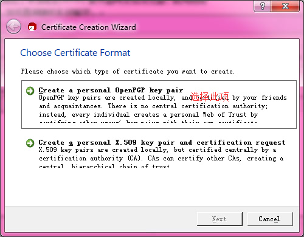
两个必填项，最后一个comment强烈建议填写下，免得忘记是干嘛的了。
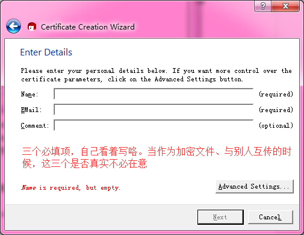
点击Advanced Settings可以设置高级选项，关于RSA这种基于分解质因数的数学上几乎不可能原理，大家伙可以自行搜索。RSA的密钥长度默认2048位的就已经够强大了，目前的RSA暴破的世界纪录是768bits。
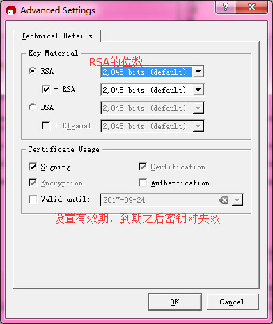
点击Next，Create Key，咦，竟然要输入个密码？这个密码是用来保护私钥的，哪怕私钥丢失，不知道密码也是无法解密滴。国际惯例，别用123456qwertyuio这类弱密码。
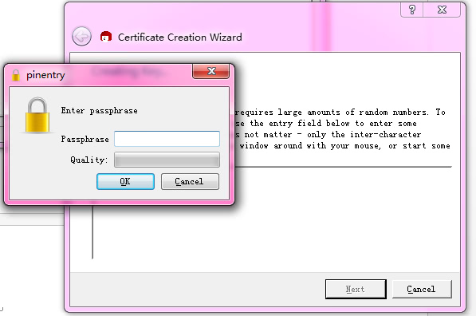
哟，创建成功啦，可以考虑把私钥备份下。
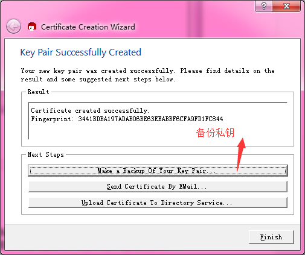
前面提到过，公钥是用来加密的，可是刚才导出的是私钥啊，公钥呢？别急，选中证书，右键，Export Certificate就可以啦。用记事本打开那个asc文件，里面的内容就是公钥，可以放到博客、网页上，别人就可以用这个来加密文件发给你。
使用公钥加密文件
上一步已经到处了公钥，这里我就暂时化身为别人，用公钥加密一个文件。
加密方需要打开GPG，File-Import Certificate导入别人发给你的公钥。
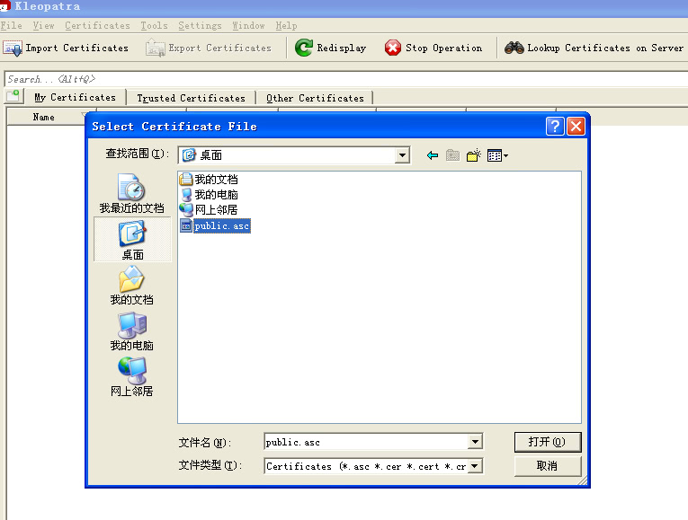
之后加密文件，选择File-Sign/Encrypt Files，选择要加密的文件
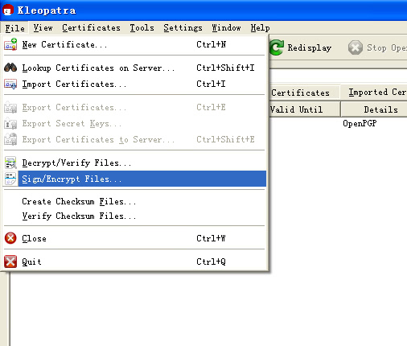
点击Next，选择证书（公钥），然后点add添加进去。
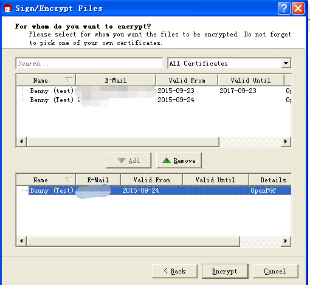
之后点击Encrypt，提示说，加密之后，你自己就看不了啦！好的我们确定继续。如果勾选了加密之后删除源文件，又会提示，会删掉源文件呀！
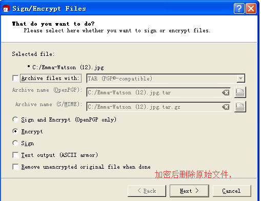
根据不同的文件大小，加密也会用不同的时间。加密完成后将会在源文件目录下生成一个扩展名为pgp的文件，把这个文件发给你的朋友吧！（也就是给你公钥的那个人）。
因为非对称加密只有用私钥才能解密，所以你大可以把这个文件公开了，没对应的私钥，是解密不了滴！
使用私钥解密文件
哟我那个狐朋狗友给我回信了，快来看看吧！
File-Decrypt/Verify Files，选择文件，点击Decrypt/Verify，选择对应的私钥，输入为私钥设置的密码（为了保护私钥不泄露），好的解密成功了，你的文件回来了。
其实，非对称的加密速度是很慢的，大概只有对称的及百分之一。但是，GnuPG的最大用途可能就是加密邮件了吧！哪怕邮箱密码泄露了，邮件内容也不会被看懂。我的GPG公钥在这里，从网站导航上你也可以看到。如果你给我用这玩意发邮件了，我就会觉得你很牛逼，很厉害的样子。当然啦，别忘记再邮件里附上你的公钥！
我们来演示下！加密邮件
下面我们简单的试试PGP Message吧！
首先，要创建密钥对，然后把公钥共享出去。这里我用虚拟机来替代与我秘密通信的坏人。
将公钥拖进Kleopatra的界面里，就可以看到Imort Certificate，选择这项，之后会看到自己的列表里出现了这一项公钥。
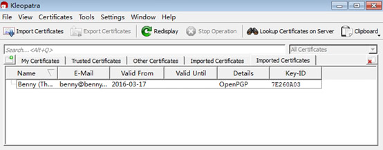
之后呢，我们自然要用某种文本编辑器写我们的邮件。某坏人就写了好多好多字，然后按下Ctrl + C放到剪贴板里。
之后此坏蛋就点了Clipboard-Encrypt
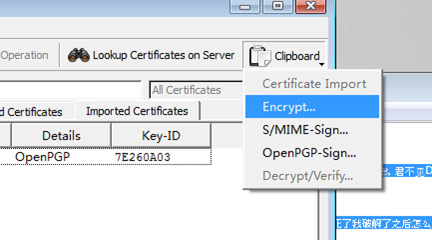
点击左下角的Add Recipient，好家伙，竟然没有博主本人的公钥？别急，右上角选择All certificate就有了。
底下会出现一行警告，这密钥你这坏人只有公钥啊，加密了你就解不开了啊。
点Next，加密成功。咦？咋回事？怎么成功了？文件呢？
别急，剪贴板里呢。
粘贴一下看看。反正是个人类都看不懂了……
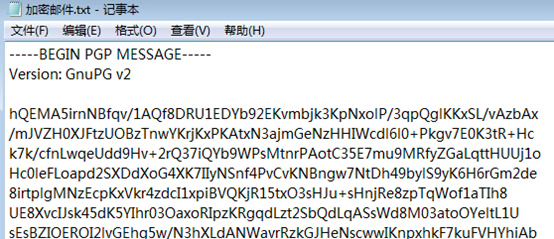
邮件又回到了本人这里，加密了之后，那我有私钥，咋解密呢？Ctrl + C复制下，Clipboard – Decryt/Verify，输入你的私钥密码。
提示操作成功，没有找到签名，什么鬼？
还是别急，粘贴下就有了……
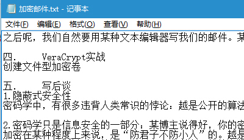
成功复原邮件，yeah！
四.VeraCrypt实战
VeraCrypt这货就是大名鼎鼎的TrueCrypt的后身。官网为http://veracrypt.codeplex.com/
创建加密卷
首先还得下载，之后呢，可以选择安装，或者Extract（提取），这货就瞬间变成绿色软件了。这两者有啥区别呢？安装版本可以加密系统盘。编程随想总结了四篇非常棒的TrueCrypt文章，本人已将其保存为mhtml，有兴趣可以下载阅读。
在这只介绍下VeraCrypt的简单用法。
打开它，看不惯英文就Settings-Language，选择简体中文。点击主界面下方的创建加密卷，看图走。
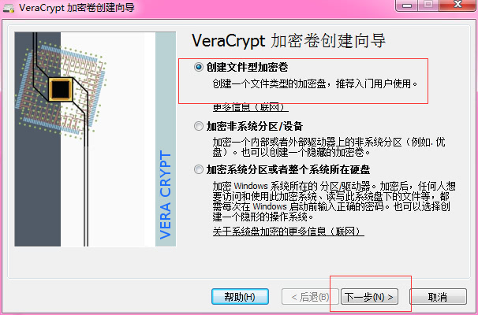
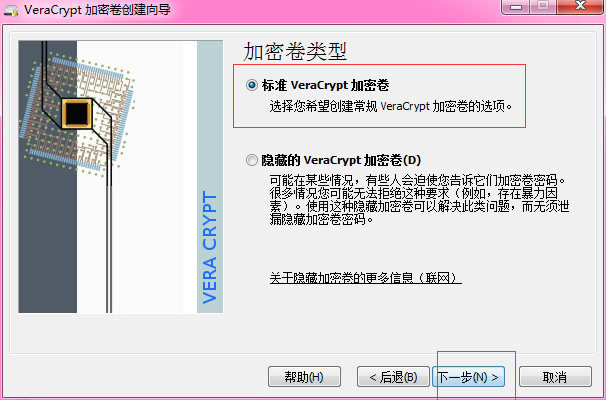
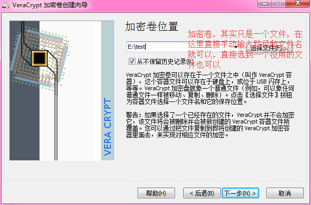
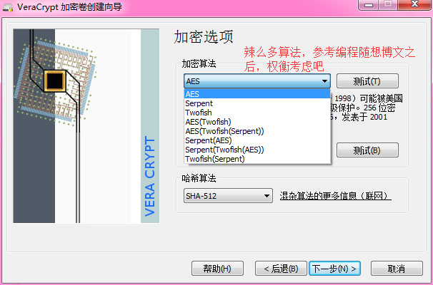
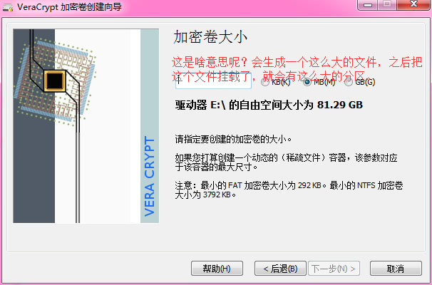
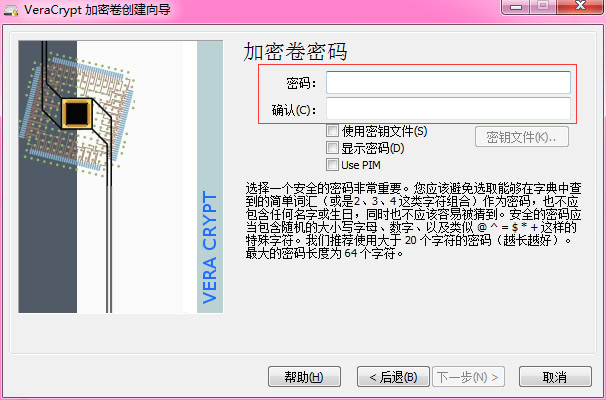
密码：一定要很复杂哦！人永远是最大的弱点嘛。
密钥文件，VC很牛逼的地方就是可以选择一个或者多个文件作为密钥，哪怕只知道密码、没有文件也是无法解密滴！其中，密钥文件可以随机生成，也可以随意选择自己的文件，比如说歌曲啊程序啊等等，但是一定要妥善保存。
随意移动鼠标，越长越好，一般来说半分钟就足够啦，然后点击格式化。此处不会格式化你的分区，只会格式化那个设置好的卷文件（在这里我的是test）。
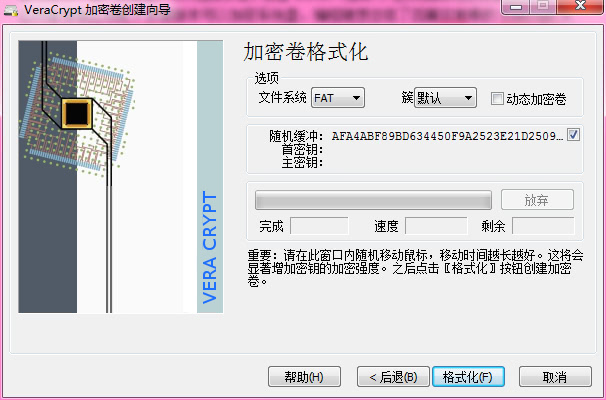
好哒加密卷创建完了，E盘下也看到了那么个100M的文件，那么怎么加密数据呢？
挂载加密卷
加密卷-选择文件，选择刚刚创建的加密卷文件，点加载，输入密码、如果有的话还要加入密钥文件。
稍等一会，会发现资源管理器里已经蹦出来了一个新的盘符，还等什么，这就和平常的分区一模一样，爱干什么干什么，用完记得点击卸载！
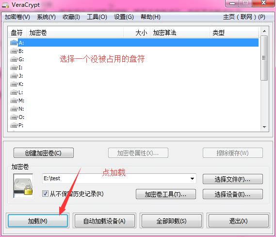
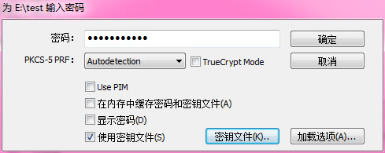
加密卷文件可以复制到U盘里，移动使用。
隐藏卷
你这和上面的也没区别啊 ，我被人拿枪顶着，还得老老实实的打密码啊。
接下来就来隐藏卷了。
怎么解释呢？有这么一个卷，一个叫外层加密卷，一个叫内层隐藏卷。两个卷拥有不同的密码以及Keyfiles。当你输入外层密码，打开的是外层的东西，输入内层密码，打开的是内层的东西。这样当被胁迫的时候，就可以很不情愿的输入外层密码，让胁迫者看到一些无关紧要的文件从而躲过一劫。
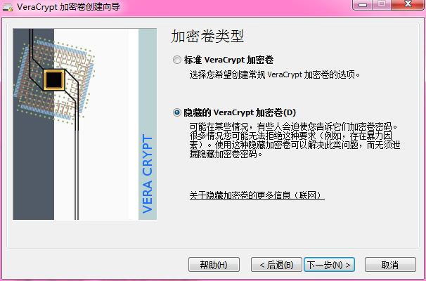
说了一堆废话，隐藏卷咋弄？
还是“创建加密卷”，加密卷类型选择隐藏的，有常规模式和直接模式。常规模式就是，我新弄个文件作为加密卷；直接模式，使用现有的。跟着向导来，先输入设置外层，再设置内层。被胁迫的时候不要输入错啦！
之后挂载的时候，输入外部卷密码，打开外部卷。输入内部卷密码，打开内部卷。
注意，外部卷容量总要大于内部卷，而且如果向外部卷写入大量文件，很有可能影响内部卷。具体请参阅编程随想博文。已经帮打包好了，解压缩密码为program-think
五.写后谈
1.隐蔽式安全性
密码学中，有很多违背人类常识的悖论：越是公开的算法，反而越安全；那些号称保密的算法，其安全性往往不堪一击。密码算法的秘密早晚会被公之于世：好似加密再牛逼的游戏最终都难逃破解一样，君不见DVD的DRM、RSA公司的RC4。那些依赖算法保密而"保密"的加密，一旦算法泄露，也就没有秘密可言了；而那些根本就没想保密的算法，公开算法对其加密性也没有影响。
2.密码学只是信息安全的一部分
某博主说得好，你的密码经得住破解但是你人经得住揍吗？
加密在某种程度上来说，是"防君子不防小人"的。越是安全的系统，其最大的弱点往往越在于人。
3.任何密码总有被破解的一天
只要尝遍所有可能的密钥，也就意味着破解——只不过有的需要几分钟，有的需要1000年。密码学的保密指的是在有限意义的时间内无法破解，你丫都死了我破解了之后怎么给你的尸骨定罪吗？
4.密码学的发展是全人类的福祉
引用《如何防范网络审计》里的话：
要不是密码学的发展，哪能给一个普通人和国家机器、哪怕是全世界的人斗争的可能？
在信息时代之前，就几乎已经注定了个人几乎无法匹敌政府，个人往往在任何一个方面都是非常渺小的……
举个例子，一个人能造什么武器？顶多是把枪，而政府却能制造出飞机坦克甚至是核武器。
不光是”武器”，其它领域（比如交通工具）也差不多。在信息时代之前，个人吖那个渺小。
信息时代之后，其实大部分领域也并没有什么变化。你现在能造出来坦克？能玩的出来高铁？别逗了。
但是密码学是个例外。
多亏了当初PGP创始人Philip Zimmermann的抗争，他抵着被无数爱国者们骂成卖国贼的心理压力、抵着被FBI抓走坐牢的压力，义无反顾的发布了PGP——当然，靠着宪法修正案第一条他出口了一本书，书里的内容就是PGP的源代码。（二战以来，密码学一直被大部分国家认作军事机密，所以是禁止出口的。大家晓得图灵不）
如今，随意一个人都可以在网上下载到一些非常优秀的加密工具，稍微学习几分钟，就可以进行高高高高高强度加密。而政府方面即使用上超级计算机，也只好干瞪眼。
当然了这无法解密是说，在有意义的时间内无法解密，比如说一百年一千年。
在密码学上，俺们屁民，是和政府们平起平坐的。
六.我的GPG公钥
为了显得我很牛逼很厉害，在这里我再次奉上我的公钥，大家戳去看看。你可以选择兼容Enigmail的工具，也可以直接贴PGP Message，或者附件加密。但是无论如何都不要忘记附加你的公钥。某天如果你这么发邮件了，我会觉得你这个人超厉害的。我猜在上面的菜单里你也看到了大大的公钥这两个字。
七.备注补遗
如果你使用Linux发行版，那么你也同样可以使用GPG的！
对称加密来说，VeraCrypt有Linux版，也可以自行编译；
非对称加密来说，Gnmoe环境下可以使用Seahorse，加密解密PGP Message可以使用gpg2 -d和gpg2 -e -a（加a选项使用ASCII Armor免得成乱码），这里就不讲教程了，既然已经入了Linux，还不会自己折腾这个嘛！
本站默认采用CC-BY-NC-SA 4.0协议进行授权 转载必须包含本声明，并以超链接形式注明原作者和本文原始地址


评论
17 条评论